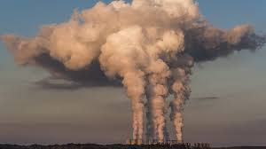
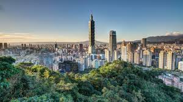

Air Pollution
Air pollution happens when dirty or harmful things get into the air we breathe. These things can come from cars, factories, smoke from fires, or even dust. Sometimes, we can see air pollution as smoke or fog, but other times it’s invisible. Even when we can’t see it, it can still be bad for our health.
Air pollution can make it hard to breathe and can make people feel sick. It can cause coughing, sore throats, and make it harder for people with asthma to breathe. Not only does it hurt people, but it also harms animals, trees, and even the weather. It can also make the Earth warmer, which is bad for our Earth.
Fun Facts
- Less than 1% of land on Earth has safe air pollution levels.
- Air pollution can cause acid rain.
- We breathe about 7 litres of air every minute, if this air is polluted it can be very harmful to us.
Before vs After

Quiz
The answers to these questions are on the bottom of the 'References' page.
- Can we see air pollution?
- What are the effects air pollution has on people?